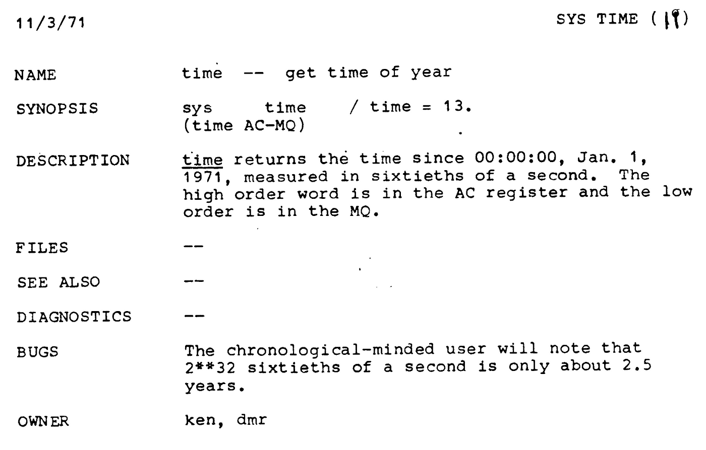

Die Nerd Enzyklopädie - Computer sind nicht pünktlich
Es war einmal im Jahr 2000 und 23…
Computer sind nicht nur notorisch unpünktlich, sie haben grundsätzliche ein Problem mit “Zeit”. Aber warum? Es ist die Art, wie Computer Zeit messen bzw. Zeitangaben verarbeiten. Stell dir vor, du könntest bis 2.000 zählen. Welches Jahr haben wir jetzt? 2000… und 23? Gesprochen klingt das noch ganz gut, aber spätestens beim Aufschreiben wird es unübersichtlich. Bei Computern ist es noch etwas komplizierter.
The Epoch
Schauen wir uns mal „The Epoch“ oder auch die „Unixzeit“ an. Damit wird das Startdatum der Zeitrechnung der meisten Computer bezeichnet: Der 1. Januar 1970.
Ursprünglich wählte man als Beginn der Zeitrechnung den 1. Januar 1971. Die Zeit sollte durch einen Zähler repräsentiert werden, der an diesem Tag bei 0 beginnt und dann in regelmäßigen Abständen (Takten) um 1 erhöht wird. Die eingebaute Uhr der damaligen Computer bot sich als Taktgeber an. Sie arbeitete mit einer Frequenz von 60 Hz, also 60 Takten pro Sekunde. Das entspricht nicht nur zufällig der Frequenz der Stromnetze in Nordamerika. Der Zeitzähler wurde also 60 mal pro Sekunde erhöht bzw. jede Sekunde um den Wert 60.
Die Obergrenze von 4.294.967.295 ergibt sich aus der Größe einer einzelnen Speicherstelle: 32 Bit . Wenn man am 1. Januar 1971 bei 0 anfängt zu zählen indem man 60 mal pro Sekunde 1 dazu addiert, erreicht man die 32 Bit-Grenze nach 71.582.788 Sekunden. Das entspricht 1.193.046 Minuten, 19.884 Stunden oder in etwa 2,5 Jahre. Man hätte die Zeit also damals schon nur bis 1973 messen können — ein Bug, der bereits bei der Beschreibung des entsprechenden Datentyps bekannt war:

Quelle: Unix Programmer’s Manual, System calls, Teil 2 (Bell Labs, 3.11.1971, Seite 13) [BELL]
Also änderte man kurze Zeit später die Zählfrequenz auf 1 Sekunde und setzte das Startdatum auf den 01.01.1970. Gleichzeit entschied man sich aber auch für einen “vorzeichenbehafteten“ Zähler, ein sogenannter „signed integer”: Das erste der 32 Bit wird als Vorzeichen verwendet. Ist es auf 1 gesetzt, interpretiert der Computer die gesamte Zahl als negativ. So ist man in der Lage, die Zeit auch rückwärts zu erfassen.
Da nun nur noch 31 Bit zur Verfügung stehen, reduzierte sich die Obergrenze für die Zeitzählung auf 2.147.483.647. Mit der außerdem angepassten Zählfrequenz von 1 Sekunde war der Computer in der Lage 68 Jahre lang die die Zeit sekundengenau zu messen. Das neue Enddatum für die Zeitrechnung ist damit der 19. Januar 2038. An diesem Dienstag um 3 Uhr nachts, 14 Minuten und 7 Sekunden mitteleuropäischer Zeit wird der Zähler den Wert 2³¹ erreichen. In binärer Schreibweise sehen die 3 Sekunden um diesen Zeitpunkt herum so aus:
Dienstag, 19. Januar 2038 04:14:07:
01111111111111111111111111111111 (dezimal: 2147483647)
Dienstag, 19. Januar 2038 04:14:08:
10000000000000000000000000000000 (dezimal: 2147483648)
Dienstag, 19. Januar 2038 04:14:09:
10000000000000000000000000000001 (dezimal: 2147483649)
Es war einmal in 1901…
Das erste Bit, das Vorzeichen-Bit, ist ab dann auf 1 gesetzt. Der Wert der restlichen 31 Bit wird als negativ interpretiert. Um 04:14:09 liest der Computer also -1. Und zieht damit eine Sekunde vom Startdatum “The Epoch” ab: Das Datum errechnet sich dann aus 1. Januar 1970, 00:00 Uhr minus 1 Sekunde, 2 Sekunden und so weiter. 68 Jahre lang, bis zum Freitag, den 13. Dezember 1901, 20:45:52 (in der Realität irgendwann in 2106). Die iterierte Quersumme dieser Uhrzeit ist übrigens die 9, die göttliche Zahl. Mythischer kann ein Bug wohl kaum sein.
Apokalypse!
Doch damit ist es noch nicht getan. Du erinnerst dich vielleicht an die Panik kurz vor der Jahrtausendwende? Man nahm an, dass Computer, die ja gerade erst anfingen unsere Alltagsroutinen zu optimieren, den Wechsel in das Jahr 2000 nicht vertragen würden. Aus zwei Gründen:
Erstens war es üblich die Jahreszahl verkürzt darzustellen, um Speicherplatz zu sparen und vielleicht auch aus analoger Bequemlichkeit. Anstatt 1986 erfasste man also nur die 86. Mit dem Wechsel in das Jahr 2000 war dann aber nicht mehr so ganz klar, worauf sich z.B. die Angabe 00 beziehen würde — auf das Jahr 1900 oder 2000?
Die zweite Ursache ergibt sich aus der Berechnung der Schaltjahre. Dass ein Schaltjahr durch vier teilbar ist, dürfte landläufig bekannt sein. Es gibt aber außerdem die Regel, dass ein Jahr, welches durch 100 teilbar ist, kein Schaltjahr ist. Und das ist noch nicht alles: Ist das Jahr außerdem durch 400 teilbar, ist es eben doch ein Schaltjahr. Zwei Regeln, die nicht sonderlich weit verbreitet waren und vermutlich immer noch nicht sind. Excel denkt selbst in 2022 noch, dass das Jahr 1900 ein Schaltjahr sei. Bug-Alarm! [MICR1]
Die Abhängigkeit von den Computern war seinerzeit vielleicht noch nicht so weit gediehen wie heute. Trotzdem vertrauten Versicherungen, Fluggesellschaften und Krankenkassen auf die „elektronische Datenverarbeitung“ (bei den öffentlichen Behörden lässt das papierlose Büro zum Glück noch eine Weile auf sich warten). Man erwartet also nichts geringeres als: Die Apokalypse!
Die US-Regierung rechnete mit Kosten zwischen 400 Millionen und 600 Millarden USD [CON1]. Bei einem verfügbaren Haushaltsbudget von 3,4 Billionen USD (1999) nicht gerade ein Pappenstiel. Letztlich beliefen sich die Kosten für die Vorbereitungen auf immer noch erstaunliche 300 Mrd. USD [BBC1] und noch mal 308 Mrd. USD für die Beseitigung der Schäden [COMP1] — weltweit.
Trotz aller Sorgen sind wir recht glimpflich davon gekommen, nicht zuletzt aufgrund der immensen Anstrengungen, die Systeme und die Software mit Updates auf den Jahreswechsel vorzubereiten.
Ganz ohne Problem ging der Jahreswechseln jedoch nicht an uns vorüber. In Singapur versagten Taxameter ihren Dienst [MONEY1], in Australien fielen Fahrscheinautomaten aus. In den USA funktionierten einige Lotterie-Maschinen nicht mehr und in Frankreich wurde die Wettervorhersage für den 01.01.1900 angezeigt [BBC2].
Es war einmal… in 1975…
Das (vermutlich) erste Problem mit der Verarbeitung von Datumsangaben geht übrigens auf das Jahr 1964 zurück. Die Zeitrechnung des DEC PDP-10 — ein recht populärer Computer zu dieser Zeit — begann am 1. Januar 1964. Dem PDP-10 standen aber nur 12 Bit zur Verfügung. Auch wenn es nur um die taggenaue Zeitrechnung ging, endete sie aus oben genannten Gründen für den PDP-10 am 4. Januar 1975: mit 12 Bit lassen sich 4.095 Tage zählen [CATL1].
…und 2010…
2010 führte ein Problem mit der Verarbeitung von Datumsangaben dazu, dass in Deutschland mehr als 30 Mio. Bankkarten unbrauchbar wurden [SPON1].
Exchange, der E-Mail-Server von Microsoft, hatte beim Übergang in das Jahr 2022 ein Problem: Hier wurden Uhrzeit und Tag schlicht zusammengesetzt: Aus dem 1. Februar 2022 12:34 Uhr wurde 2201021234 — zu groß für einen vorzeichenbehafteten 32 Bit Integer [GOLEM1].
Und es wird einmal sein in 292.277.026.596…
Und auch in der fernen Zukunft werden wir immer wieder mit den Grenzen der „modernen“ Informationstechnologie konfrontiert, seien es die Jahre 2040, 2080, 2137 und so weiter [WIKI1]. Das Jahr 10.000 ist das erste fünfstellige Jahr. Das stellt die bis gewohnte 4-stellige Schreibweise für Jahre vor ein Problem. Das Jahr 30.828 wird von Windows nicht als Systemdatum akzeptiert und selbst im Jahr 292.277.026.596, wenn weder Erde noch Sonne und vielleicht nicht einmal das Universum existieren, an einem bitterkalten Winter-Sonntag, dem 4. Dezember, zur besten Kaffee- und Kuchenzeit vor dem Kamin, um 15.30 Uhr und 8 Sekunden, werden auch die heute üblichen 64 Bit Computer ihren Dienst versagen. Aus oben erklärten Gründen.
Die Schaltsekunde
Als wäre die Verarbeitung Zeitangaben und Schaltjahre nicht schon Herausforderung genug: Die Rotation der Erde um ihre eigene Achse dauert nicht immer exakt 24 Stunden. Sie ist in der Regel langsamer, in 2020 war sie sogar schneller. Die kaum berühmte aber dennoch berüchtigte Schaltsekunde!
Seit Beginn der „Computerzeitrechnung“ in 1972 (dort wurde ja erst „The Epoch„ definiert) sind hier bereits 37 Sekunden fällig geworden [WIKI2]. Nur: Die Geschwindigkeit der Erde unterliegt „nichtperiodischen Schwankungen“. Wir können heute also noch nicht sagen, wieviele Schaltsekunden bis 2.100 anfallen werden. Das macht jede Kalendererinnerung für die Zukunft sehr unzuverlässig. Computer sind unpünktlich
Unwahrheiten
Das Thema “Zeitrechnung“ ist von zahlreichen Missverständnisse geprägt und diese Lanze muss man für die Computer dann doch brechen: Das Problem sitzt nicht zuletzt vor dem Monitor. Und deswegen haben sich fleißige Enticklerinnen und Expertinnen die Mühe gemacht, die Probleme mit der Verarbeitung von Daten und Zeiten in einem Gist zu sammeln: [GIST1].